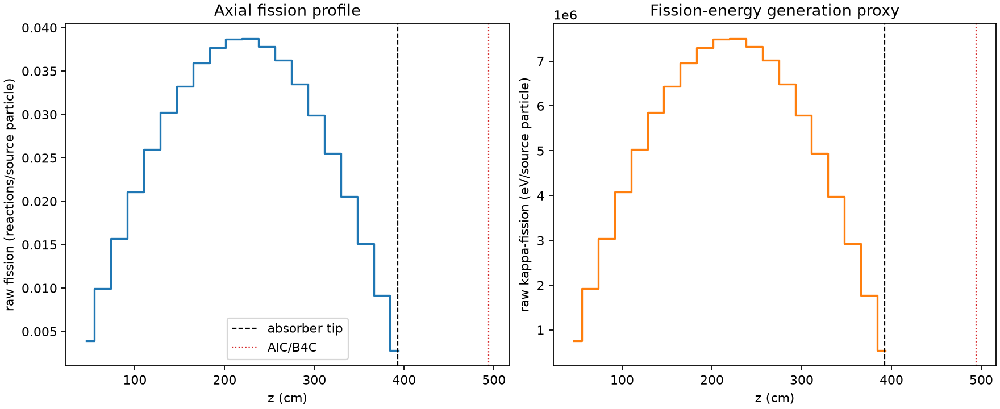
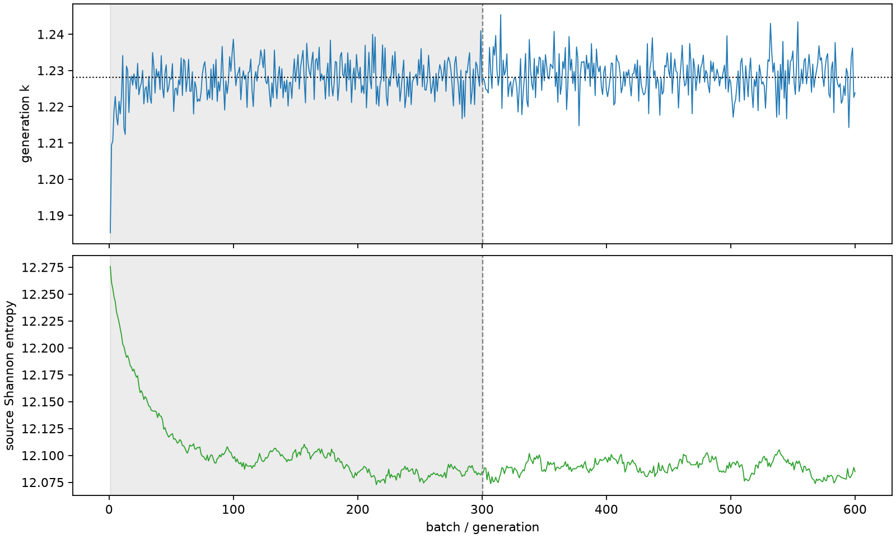

| field | value |
|---|---|
| experiment | V2-STAGE_256_OGRENCI_01-0025 |
| k | 1.2280289574278171 |
| MC standard error | 0.0001739749650420265 |
| seconds | 1032.1655220240063 |
| acceptance | not_assessed |
| convergence | review_required |
Completed is output integrity only; physical and statistical review required. Zero tallies do not prove zero production or zero uncertainty.
| diagnostic | value |
|---|---|
| geometric fuel voxels | 5280 |
| zero fission tally voxels | 0 |
| low signal fuel voxels | 0 |
| low signal fission share | 0.0 |
| low signal kappa share | 0.0 |
| important fission share | 0.9500259468692308 |
| previous filter included | 5280 |
| duration estimate s | 1562.5173488400023 |
| actual minus estimate s | -530.351826815996 |
| fission relative MC error | statistics |
|---|---|
| all_geometric_fuel | {"voxels": 5280, "positive_mean_voxels": 5280, "zero_mean_voxels": 0, "undefined_relative_error_voxels": 0, "median": 0.009838380689458007, "p95": 0.02805592416215447, "maximum": 0.036956751087102585} |
| low_signal | {"voxels": 0, "positive_mean_voxels": 0, "zero_mean_voxels": 0, "undefined_relative_error_voxels": 0, "median": null, "p95": null, "maximum": null} |
| important_95pct | {"voxels": 4242, "positive_mean_voxels": 4242, "zero_mean_voxels": 0, "undefined_relative_error_voxels": 0, "median": 0.009256154192018036, "p95": 0.013380041584290247, "maximum": 0.017367988336350528} |
| outside_previous_filter | {"voxels": 0, "positive_mean_voxels": 0, "zero_mean_voxels": 0, "undefined_relative_error_voxels": 0, "median": null, "p95": null, "maximum": null} |
| kappa_fission relative MC error | statistics |
|---|---|
| all_geometric_fuel | {"voxels": 5280, "positive_mean_voxels": 5280, "zero_mean_voxels": 0, "undefined_relative_error_voxels": 0, "median": 0.009827656937650567, "p95": 0.02802241920469529, "maximum": 0.03691244989731944} |
| low_signal | {"voxels": 0, "positive_mean_voxels": 0, "zero_mean_voxels": 0, "undefined_relative_error_voxels": 0, "median": null, "p95": null, "maximum": null} |
| important_95pct | {"voxels": 4242, "positive_mean_voxels": 4242, "zero_mean_voxels": 0, "undefined_relative_error_voxels": 0, "median": 0.009246609956222538, "p95": 0.01336527601493047, "maximum": 0.017348814263386057} |
| outside_previous_filter | {"voxels": 0, "positive_mean_voxels": 0, "zero_mean_voxels": 0, "undefined_relative_error_voxels": 0, "median": null, "p95": null, "maximum": null} |
| axial bin | fission share | kappa-fission share |
|---|---|---|
| 1 | 0.007756533647687426 | 0.0077568577301760115 |
| 2 | 0.019807471881610948 | 0.019807433597677594 |
| 3 | 0.031238680851460886 | 0.031238677975893525 |
| 4 | 0.042012017053161245 | 0.042011986814225404 |
| 5 | 0.05180624165825334 | 0.05180623129173392 |
| 6 | 0.06021282129564154 | 0.06021282057251618 |
| 7 | 0.06630545725950293 | 0.06630563328670787 |
| 8 | 0.07156420139383082 | 0.07156399176727586 |
| 9 | 0.07509751847345583 | 0.07509742913941592 |
| 10 | 0.07710709214001865 | 0.07710688494806774 |
| 11 | 0.07716051877903066 | 0.07716026549945076 |
| 12 | 0.07539744217845396 | 0.07539750558796453 |
| 13 | 0.07227579645065509 | 0.07227560007075944 |
| 14 | 0.0667895144407517 | 0.06678946311415357 |
| 15 | 0.059647447445811866 | 0.05964732147459225 |
| 16 | 0.050889609913214055 | 0.05088941107180489 |
| 17 | 0.0410154899132717 | 0.04101547619821128 |
| 18 | 0.030077685614641827 | 0.030077698461516398 |
| 19 | 0.018227128337540997 | 0.018227161965409834 |
| 20 | 0.005611331272004703 | 0.00561214943244733 |
Histories include the inactive-to-active transition at batch 300. kappa-fission approximates fission energy production, not total heat deposition.

